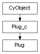

class cymel.core.cyobjects.plug.Plug¶

- class cymel.core.cyobjects.plug.Plug(src)¶
Bases:
Plug_cPlug wrapper class.
Methods:
addElement([idx])Add multi-attribute elements in an undoable manner.
animCurve([dk, direct])Get one animCurve connected to the attribute.
animCurves([dk])Get a list of all animCurves connected to an attribute.
animLayers([selected, exact])Get a list of animation layer names to which the plug belongs.
belongsToLayer(layer)Whether it is a member of the specified animation layer.
connect(src[, force, f, lock, l, ...])Connect from the specified plug to this plug.
connectTo(dst, **kwargs)Connect from this plug to the specified plug.
createAnimCurve([unitless, cls])Generate animCurve node according to the attribute type.
delete([force])Delete dynamic attributes.
disconnect([src, force, f, nextAvailable, na])Disconnect the input connection.
isMuted()Whether muted or not.
iterElements([start, end, step, all, infinite])Iterate over multi-attribute elements.
iterHierarchy([evaluate, connected, checker])Iterate under the plug hierarchy (multi-element, compound child).
layeredPlug([layer, selected, exact, best, ...])Get surrogate plugs with animation layers.
listEnum([reverse])Get a list of enum attribute name/value pairs.
lock([val, leaf])Alternative name for
setLocked.mute(**kwargs)Mute.
pairBlendPlug([in1, in2, cur, inUse, byWeight]):mayanode:Get the input plug for
pairBlend.remove([b, f, force])Delete if itself is a multi-attribute element plug.
removeAllElements([b, f, force])If the plug itself is a multi-attribute multi-plug, delete all its elements.
removeElement([idx, b, f, force])Delete multi-attribute elements.
reset()Reset to default value.
set(val[, safe])Set the attribute value in internal units.
setAlias ([name])Set or delete a plug alias.
setCached(val[, leaf])Set the Caching flag.
setCaching(val[, leaf])Set the Caching flag.
setChannelBox(val[, leaf])Set whether to output to the channel box even if it is not keyable.
setKey(**kwargs)Set keyframes.
setKeyable(val[, leaf])Set the Keyable flag.
setLocked([val, leaf])lock or unlock.
setu(val[, safe])Set attribute values for each UI setting.
toggle()Toggle attribute values.
unlock([below, undoable])Unlocks this plug and the plugs above and below (optional) in the hierarchy.
unmute(**kwargs)Unmute.
Method Details:
- addElement(idx=None)¶
Add multi-attribute elements in an undoable manner.
The presence or absence of the upper layer is also checked, and it is also guaranteed to add and undo parts that do not exist.
A list of processed plugs arranged from bottom to top is returned (if the plug already exists, it will be an empty list).
- animCurve(dk=False, direct=False)¶
Get one animCurve connected to the attribute.
- Parameters:
- Return type:
AnimCurvederived type or None
- animCurves(dk=False)¶
Get a list of all animCurves connected to an attribute.
If you have multiple animCurves depending on the animation layer, you will get them all.
- animLayers(selected=False, exact=False)¶
Get a list of animation layer names to which the plug belongs.
Similar to when all=True is specified for
layeredPlug, the layers are obtained in descending order.
- belongsToLayer(layer)¶
Whether it is a member of the specified animation layer.
- connect(src, force=False, f=False, lock=False, l=False, nextAvailable=False, na=False)¶
Connect from the specified plug to this plug.
Full undo is supported in all cases.
The output side plug is always returned, and if nextAvailable is False, this plug will be returned, and if it is True, it will be the determined element plug.
- Parameters:
src (
Plug) – Input source attributes.f|force (bool) – Connect by avoiding error factors such as other connections or locks.
l|lock (bool) – Lock after connecting.
na|nextAvailable (bool) – Connect to the next available index. Can be used not only for isIndexMatters setting. The connected element plug is returned.
- Return type:
Plugor None
Note
Although options cannot be specified, similar operations can be performed using the operator <<.
Warning
In order to maintain consistency with
disconnect, the input is specified for the output, and the direction of specification is opposite to that of pymel’s connect.connectTocan also be used in the same direction as pymel.
- connectTo(dst, **kwargs)¶
Connect from this plug to the specified plug.
- Parameters:
- Return type:
Note
Although options cannot be specified, the same operation is possible with the operator >>.
- createAnimCurve(unitless=False, cls=<class 'cymel.core.cyobjects.cyobject.CyObject'>)¶
Generate animCurve node according to the attribute type.
Do not connect to attributes.
- delete(force=False)¶
Delete dynamic attributes.
- Parameters:
f|force (bool) – Delete while avoiding error factors such as existing connections or being locked.
- disconnect(src=None, force=False, f=False, nextAvailable=False, na=False)¶
Disconnect the input connection.
Full undo is supported in all cases.
If nextAvailable is False, the disconnected input plug is returned; if nextAvailable is True, a list of output plugs is returned.
- Parameters:
src (
Plug) – Input plug to disconnect. Optional.f|force (bool) – Even if it is locked, disconnect as much as possible to avoid errors (temporarily unlock it and restore it).
na|nextAvailable (bool) – When multiplug and src are specified, searches for connected elements and disconnects them. If there is more than one, they are all disconnected and a list of them is returned. Can be used not only for isIndexMatters setting.
- Return type:
Note
Although options cannot be specified, similar operations can be performed using the operator //.
- isMuted()¶
Whether muted or not.
- iterElements(start=None, end=None, step=1, all=False, infinite=False)¶
Iterate over multi-attribute elements.
Specify the start, end, and step in the same way as Python’s slice. It is also possible to specify negative numbers for each.
If all arguments are omitted, all present elements will be iterated over.
- Parameters:
start (int) – Specifies the logical index to start with. If you specify a negative number, the last index of the existing element will be set to -1 and the position will be moved backwards. If omitted (None), the starting point of the existing element is used (the minimum index if step is positive, the maximum index if step is negative).
end (int) – Specifies the ending logical index. What is actually retrieved is the position one position before this. If you specify a negative number, the last index of the existing element will be set to -1 and the position will be moved backwards. If omitted (None), the position will be one position beyond the end point of the existing element (if step is positive, the minimum index -1, if it is negative, the maximum index +1).
step (int) – Specify the number of index steps.
all (bool) – Whether to get the element whether it exists or not. If infinite=True, all=True is also considered.
infinite (bool) – Gets the element whether it exists or not, ignores end, and iterates infinitely. However, if step is negative, it will not be less than 0. Be careful of infinite loops if step is positive.
- iterHierarchy(evaluate=False, connected=False, checker=<function gettrue>)¶
Iterate under the plug hierarchy (multi-element, compound child).
- Parameters:
evaluate (bool) – Evaluate multiplugs when collecting multielements.
connected (bool) – When collecting multiple elements, use connections as the basis.
checker (callable) – Specify a function that receives one plug and returns
bool. It does not descend to the lower layer from the point where it returns False.
- layeredPlug(layer=None, selected=False, exact=False, best=False, all=False, asPair=False, allowNonLayer=False)¶
Get surrogate plugs with animation layers.
By setting allowNonLayer=True, it can also be used as a means to obtain proxy plugs using other mechanisms (assuming pairBlend and mute) even if the animation layer is not used.
Examples of option combinations are shown below.
Get the plug of the top layer it belongs to: Default
Get the plug for the target layer when hitting a key in the current state: best=True
Get base layer plug: layer=’’
Get the plugs of all layers to which the plug belongs: all=True
Get the top of the selection layer to which the plug belongs: selected=True
Get all selected layers to which the plug belongs: all=True, selected=True
Get the plug if it belongs to the specified layer: layer=”layer name”, exact=True
If it belongs to the specified layer, search for that plug, otherwise search from the top: layer=”layer name”
If it belongs to the specified layer and is selected, get that plug: layer=”layer name”, selected=True, exact=True
If it belongs to the specified layer and is selected, search for that plug, otherwise search sequentially: layer=”layer name”, selected=True
- Parameters:
layer (str) – Animation layer to search for. With the default None, the layer to which the plug belongs will be searched from top to bottom. Specifying “” (empty string) is synonymous with specifying a base layer. If the plug does not belong to the specified layer, the default behavior is to search for the layers it belongs to from the top. In other words, like
animLayers, they are obtained in the order of the layer editor.selected (bool) – Limit the search target layers to those in the selected state. If layer is specified, filter when that layer is selected. If layer is not specified, the layer is not selected, or the plug is not a member, the sequentially searched layers will be narrowed down to only those that are selected.
exact (bool) – Modify layer and selected options. If the default is False, if the plug is not a member of the specified layer, other layers and base layers will be searched in turn. Also, even if selected is specified, the selected state does not matter for the base layer that is the last result of sequentially searching layers. Specifying True will result in strict behavior, and when layer is specified, None will be returned if the plug is not a member of it. Also, the selected flag will be checked for the last base layer as a result of sequentially searching layers.
best (bool) – Gets the plug for the layer that is the target of keystrokes in its current state.
all (bool) – If True is specified, the return value will always be
list. Changes the behavior when layers are sequentially searched because layer is not specified, the layer is not a member of the specified layer, or the selected flag does not match. With the default False, depending on whether layer is None or “”, either the first found layer or the last base layer plug is returned, with top priority. If you specify True, plugs for all layers searched sequentially (narrowed down by the selected check) will be acquired.asPair (bool) – If set to True, a pair of
Plugand its corresponding layer name will be returned.allowNonLayer (bool) – If the plug only belongs to the base layer (not layer blended) and other switch-type nodes are sandwiched, you will get that input plug. pairBlend and mute are assumed.
- Returns:
- listEnum(reverse=False)¶
Get a list of enum attribute name/value pairs.
- mute(**kwargs)¶
Mute.
- pairBlendPlug(in1=True, in2=False, cur=False, inUse=False, byWeight=False)¶
:mayanode:Get the input plug for
pairBlend.- Parameters:
in1 (bool) – Get a plug for input 1.
in2 (bool) – Get a plug for input 2.
cur (bool) – Ignore the in1 and in2 specifications and check the currentDriver of pairBlend to get 1 or 2.
inUse (bool) – Obtain only if the desired input system is used.
byWeight (bool) – Ignores all in1, in2, cur, and inUse specifications and checks the mode and weight of pairBlend to get the input tuples being used.
- Return type:
tupleif byWeight is True,tupleif in1 and in2 are both True, otherwise a singlePlugor None.
- remove(b=False, f=False, force=False)¶
Delete if itself is a multi-attribute element plug.
It is the same as when no index is specified for
removeElement, but in this case, an error will occur if used in anything other than an element plug.Returns the number of removed elements. However, it also includes the number of multi-attribute elements under the attribute hierarchy.
- removeAllElements(b=False, f=False, force=False)¶
If the plug itself is a multi-attribute multi-plug, delete all its elements.
This is the same as not specifying an index for
removeElement, but in this case, an error will occur if used with anything other than multi-plug.Returns the number of removed elements. However, it also includes the number of multi-attribute elements under the attribute hierarchy.
- removeElement(idx=None, b=False, f=False, force=False)¶
Delete multi-attribute elements.
Returns the number of removed elements. However, it also includes the number of multi-attribute elements under the attribute hierarchy.
- Parameters:
idx (int) – Specifies the index to be deleted when it is multi. If omitted, if it is an element, it will be deleted, and if it is a multi, all elements will be deleted.
b (bool) – Even if there is a connection, it will be deleted without causing an error.
f|force (bool) – Avoid not only connections but also error factors such as locking as much as possible. This option alone also serves as b=True.
- Return type:
- reset()¶
Reset to default value.
- set(val, safe=False)¶
Set the attribute value in internal units.
By specifying None, you can also set the data type attribute to Null. Of course undo is also possible.
- Parameters:
val – Value to set.
safe (bool) – An error does not occur even if the attribute cannot be set because it is locked. Also, in the case of numerical compounds such as double3, only the places that can be set are set. Returns the number of attributes that failed to set.
- Return type:
None or
int
- setAlias(name=None)¶
Set or delete a plug alias.
- Parameters:
name (str) – Alias to set. If you specify None or an empty string, the existing settings will be deleted.
- setCached(val, leaf=False)¶
Set the Caching flag.
- setCaching(val, leaf=False)¶
Set the Caching flag.
- setChannelBox(val, leaf=False)¶
Set whether to output to the channel box even if it is not keyable.
- setKey(**kwargs)¶
Set keyframes.
- setKeyable(val, leaf=False)¶
Set the Keyable flag.
- setLocked(val=True, leaf=False)¶
lock or unlock.
- Parameters:
Note
In the case of unlocking, the
unlockmethod is convenient because it can guarantee the upper and lower plug hierarchy.
- setu(val, safe=False)¶
Set attribute values for each UI setting.
By specifying None, you can also set the data type attribute to Null. Of course undo is also possible.
- Parameters:
val – Value to set.
safe (bool) – An error does not occur even if the attribute cannot be set because it is locked. Also, in the case of numerical compounds such as double3, only the places that can be set are set. Returns the number of attributes that failed to set.
- Return type:
None or
int
- toggle()¶
Toggle attribute values.
It only sets the negation of the current value, so it works even if the type is not bool.
- Return type:
- unlock(below=False, undoable=True)¶
Unlocks this plug and the plugs above and below (optional) in the hierarchy.
A list of actually unlocked plugs arranged from top to bottom is returned.
- Parameters:
- Return type:
Note
Since the lock status is inherited from the upper layer, it is not possible to judge the lower layer without unlocking the upper layer.
- unmute(**kwargs)¶
Unmute.